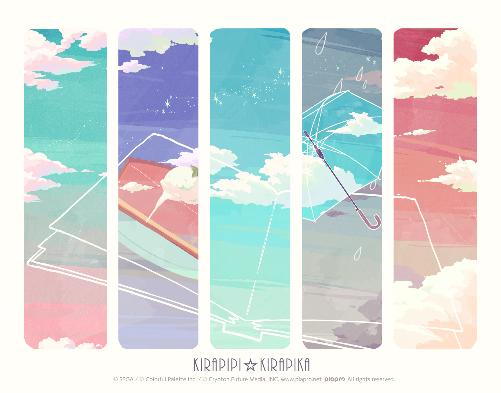
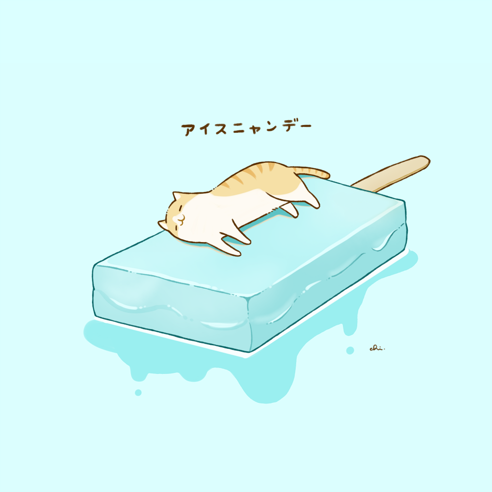

Welcome To D9游研！！！

社团简介
D9游研社简介
D9游研社是一个以游戏开发为核心的兴趣社团，致力于为所有对游戏创作感兴趣的同学提供学习、交流与实践平台。 社团围绕游戏开发知识分享、Game Jam 组队协作以及业余小游戏制作等方向开展活动，帮助成员了解游戏开发流程、 积累项目经验，并在合作中感受游戏创作的乐趣。
社团主要活动
- 游戏开发知识分享： 组织策划、程序、美术、音频、测试及项目管理等方向的分享与交流，兼顾零基础入门与进阶经验， 帮助成员逐步建立对游戏开发的整体认知。
- Game Jam 组队与参与： 为参与各类 Game Jam 或社团内部创作活动提供组队与交流机会，促进不同专长、不同年级成员之间的协作， 在限定时间内完成可玩的游戏原型。
- 业余小游戏制作： 鼓励成员自由组队，将创意落地为小型游戏作品，在实践中提升开发能力、协作能力与作品完成度。
- 新人实践比赛： 面向新成员组织小型比赛或实践项目，帮助大家熟悉从创意提出、分工协作到开发完成的游戏开发基本流程。
- 展会与校际交流： 不定期组织成员参观展会、参与交流活动，并视实际情况与外校社团开展联合活动（具体安排待定）， 拓展视野，促进校际交流。
D9游研社面向全体同学开放，尤其欢迎零基础但感兴趣的同学加入。本社团为兴趣社团，不设硬性指标或强制要求， 成员可根据自身兴趣与时间自由参与。
无论你是想学习游戏开发、寻找组队伙伴，还是单纯想体验游戏创作的乐趣， D9游研社都期待你的加入。
让我们一起学习、交流、做游戏。
近期活动
-
活动1

-
活动2

-
活动3

-
活动4

游戏作品展示
-
作品1

-
作品2

-
作品3

-
作品4